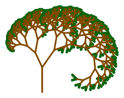

Vary Your Tree
-
Change your tree in the following ways. You should probably try these one at a time, so that you can always tell exactly what edit (in your script) relates to changes on the stage.
- Change the turn angle.
- Change the scale factor.
- Change the number of recursive calls.
-
See if you can make a tree like the first picture in this activity:

It is different from what we have done so far because the smaller trees are drawn part way up the trunk, instead of at the top of the trunk, and because the pen color is green for the lowest-level branches (the tree1-like ones) and brown for the others. You do not have to get it exactly like the picture; just try to make a more realistic-looking tree.
Random Trees
Make this an "if there is time." --MF
We want to make a tree that looks more random. Here are some pictures of different runs of the program with different levels so that you can see what we were thinking.
-
Unfortunately, our attempt (shown below) was unsuccessful (see "tree" on the right). Modify the
crazy-tree code to produce the random trees as shown above. (Click for big hint.)


A Forest
-
Now, make a forest by planting varied trees randomly on the screen.